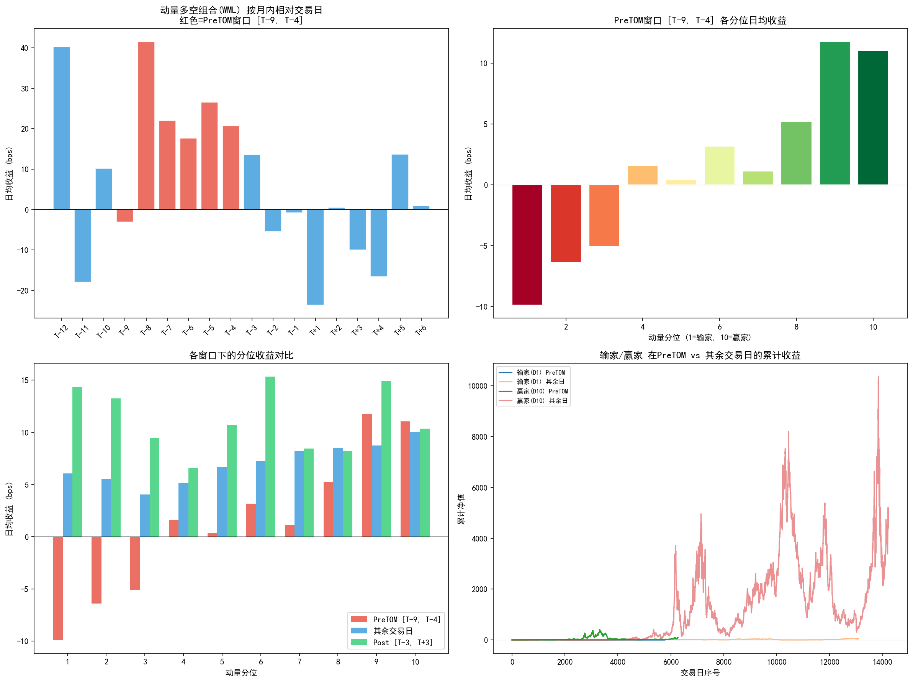
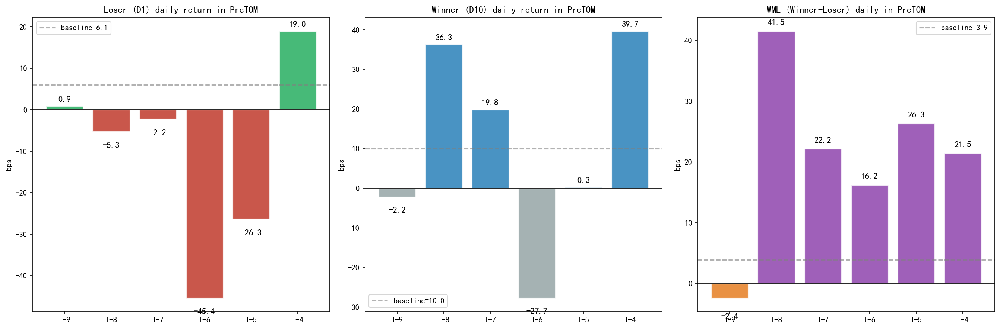
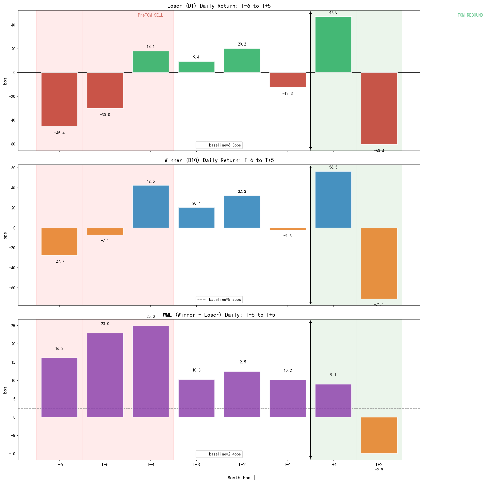
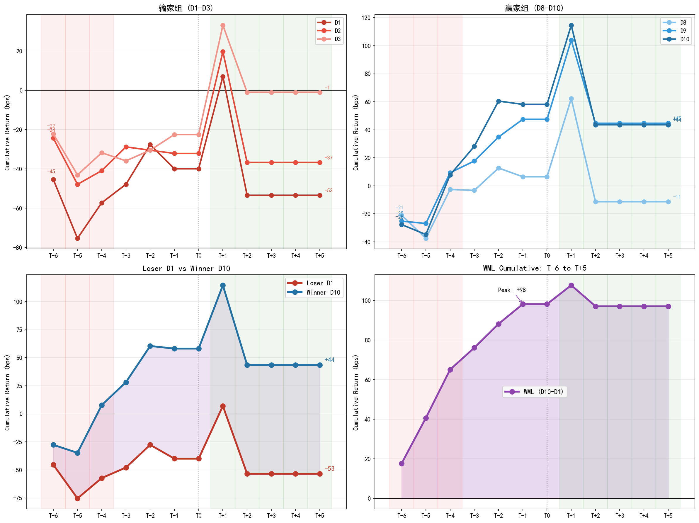

Paper: Nathan, Suominen & Tasa (2026), The Intramonth Momentum Cycle, SSRN
The paper finds that 77% of US momentum profits concentrate in 6 fixed trading days each month (days T-9 to T-4 before month-end, the PreTOM window). The mechanism: institutional month-end cash constraints force settlement selling, targeting dispensable loser stocks.
This study tests whether the same pattern holds in China's A-share market.
| Item | Description |
|---|---|
| Data | baostock backward-adjusted daily prices |
| Universe | 100 Shanghai/Shenzhen stocks (incl. CSI 300 constituents) |
| Period | 2016-01-01 to 2025-12-31 (10 years) |
| Signal | 12-month return skipping the most recent month (Jegadeesh-Titman) |
| Grouping | Monthly deciles by momentum (D1=loser, D10=winner) |
| PreTOM | Days T-9 to T-4 before month-end |
| TOM | Turn-of-month window T-1 to T+3 |
| Metric | PreTOM [T-9,T-4] | Other Days | t-stat | p-value |
|---|---|---|---|---|
| Loser (D1) | -9.88 bps | +6.06 bps | -4.17 | <0.0001 |
| Winner (D10) | +11.05 bps | +10.03 bps | 0.24 | 0.81 |
| WML (10-1) | +20.89 bps | +3.87 bps | 2.04 | 0.04 |
Losers underperform by nearly 10 bps/day during PreTOM — extremely significant. Winners show no difference. The effect is entirely loser-driven.

| Day | Loser (bps) | Winner (bps) | WML (bps) | Loser t | Sig |
|---|---|---|---|---|---|
| T-6 | -45.36 | -27.66 | +16.22 | -6.22 | *** |
| T-5 | -30.04 | -7.09 | +22.98 | -4.28 | *** |
| T-4 | +18.13 | +42.54 | +24.95 | +1.37 | |
| T-3 | +9.40 | +20.43 | +10.31 | +0.34 | |
| T-2 | +20.22 | +32.27 | +12.50 | +1.51 | |
| T-1 | -12.32 | -2.34 | +10.18 | -1.92 | |
| T+1 | +46.96 | +56.51 | +9.05 | +3.26 | ** |
| T+2 | -60.44 | -71.07 | -9.91 | -3.59 | *** |
A-share PreTOM selling is pulse-shaped (T-6/T-5 concentrated burst), not gradual like in the US. T-6/T-5 account for 121% of total loser underperformance.

T+1: losers +47 bps (t=3.26), winners +56 bps (t=3.45). Winners rebound more, indicating T+1 is a market-level month-end effect (beta), not a loser-specific reversal (alpha).
T+2 full market giveback: losers -60 bps, winners -71 bps.

Losers cliff-drop on T-6/T-5 (~75 bps in 2 days), rebound ~47 bps on T+1, but remain below starting point by T+5 — PreTOM selling damage is not fully repaired. WML rises steadily during PreTOM and flattens after T+1.

The paper identifies a causal natural experiment. On May 28, 2024, the SEC shortened the US settlement cycle from T+2 to T+1.
If PreTOM loser selling is driven by settlement timing constraints, the selling window should shift one day closer to month-end after reform.
| Pre-Reform | Post-Reform | Difference | |
|---|---|---|---|
| Peak loser selling day | T-4 | T-3 | Shifted 1 day |
| T-4 return | Extremely negative | Vanished | 84.7 bps (t=2.80) |
Triple-diff (losers vs winners × pre vs post × target vs control): 196 bps (t = 2.20).
Implication: SEC changed one plumbing rule, and momentum's microstructure shifted by exactly one day. Behavioral biases or risk premiums cannot explain this displacement.
If loser declines during PreTOM reflect liquidity pressure (not fundamental deterioration), prices should rebound after pressure fades. They do.
In the 7-day Post window [T-3, T+3], losers' excess negative return recovers ~70%.
The remaining 30% doesn't return immediately. Momentum decile groupings are sticky — stocks stuck in the loser bucket accumulate month-over-month PreTOM pressure, which unwinds slowly over longer horizons.
This provides a micro-foundations explanation for the "momentum long-term reversal" documented by Jegadeesh & Titman (1993).
A natural question: since PreTOM generates most momentum profits, do crashes also concentrate there? If so, profits might just be compensation for tail risk.
The paper gives a clear answer: crashes occur at month-start (T+1 to T+3), not in PreTOM.
| Window | Crash Day Share | Calendar Share | z-stat |
|---|---|---|---|
| PreTOM [T-9, T-4] | 30.8% | 33.3% | -1.32 (insignificant) |
| Month-start [T+1, T+3] | Significantly higher | — | Significant |
Profit window and crash window are temporally separated — PreTOM profits are NOT compensation for crash risk.
The paper replicates across 19 developed markets (Compustat Global, 1990-2025). With country fixed effects:
The sole exception is Japan. In Japan, past losers tend to rebound and past winners tend to fall — the momentum factor is persistently negative. Since Japan's momentum direction is reversed, losers performing slightly better in PreTOM actually confirms the same mechanism from the opposite side.
Key difference: A-share T+1 settlement narrows the selling window vs US (originally T+2), producing a pulse instead of a gradual build-up. But direction and magnitude are highly consistent — loser-driven, no winner anomaly.
First, momentum's "time address" has been precisely located. Traditionally we think of momentum as a monthly-frequency anomaly — past 12-month winners continue to outperform. But Nathan et al. show that monthly averages mask extreme intramonth concentration. If your portfolio happens to miss these six days each month (e.g., due to rebalancing timing), you may unknowingly forgo most of the momentum premium.
Second, this finding completes the intramonth clock with the calendar effect. The first half of the post-month-end period (T-9 to T-4) is when losers are dumped and momentum profits; the turn-of-month (T-1 to T+3) is when the broad market dips then rebounds. Both stem from institutional month-end cash management, but operate differently: the former is a cross-sectional effect (losers vs winners), the latter a market-wide effect.
Third, it redefines the "essence" of momentum. For three decades, momentum explanations oscillated between behavioral bias (investor underreaction) and risk compensation (bearing systematic risk). Nathan et al. propose a third possibility: momentum may simply be a byproduct of market microstructure — settlement mechanics, month-end payment obligations, and institutional cash management habits collectively shape the momentum returns we observe.
"You don't need to believe any narrative about investor irrationality or hidden risk premiums — you just need to believe one thing: fund managers need to raise cash at month-end."
— adapted from EarlETF
| File | Description |
|---|---|
intramonth_momentum.py | Main backtest (momentum grouping + PreTOM analysis + stats + charts) |
pretom_daily_v2.py | PreTOM daily decomposition (T-9 ~ T-4) |
posttom_daily.py | PostTOM daily decomposition (T-3 ~ T+3) |
tom_daily.py | TOM daily view (T-2 ~ T+5) |
full_cycle.py | Full cycle chart (T-6 ~ T+5) |
cumulative_curve.py | Cumulative return curves (loser/winner/WML) |
*.png | Rendered analysis charts |